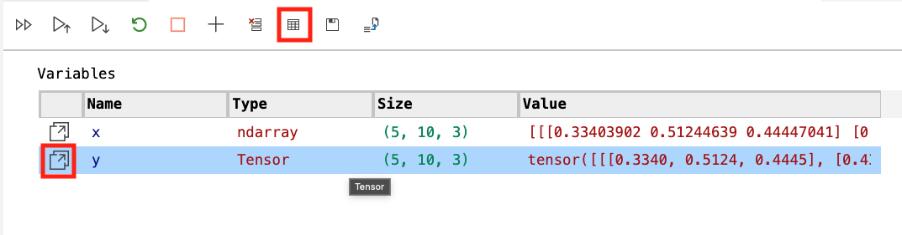
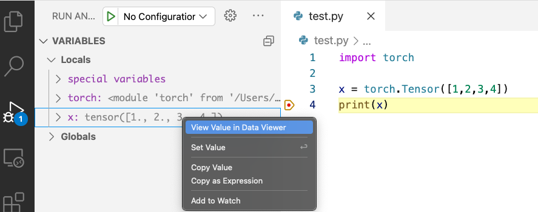
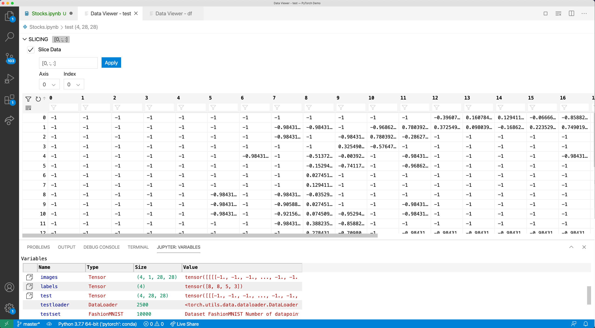
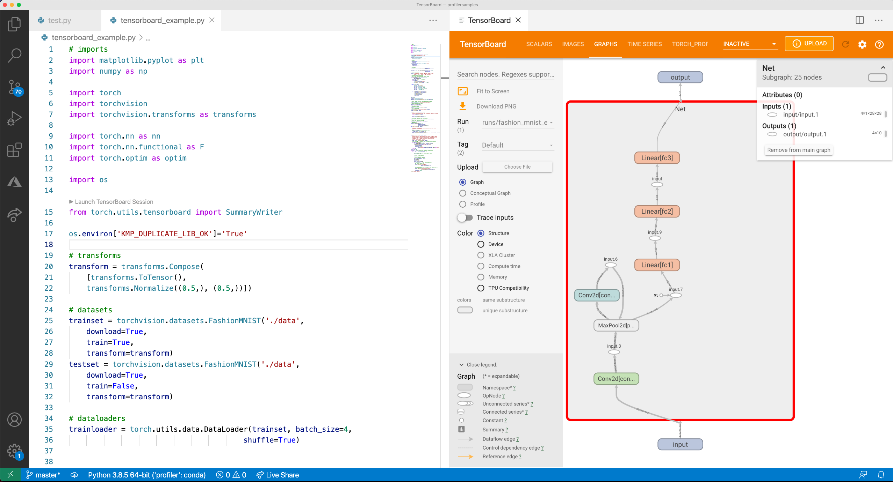
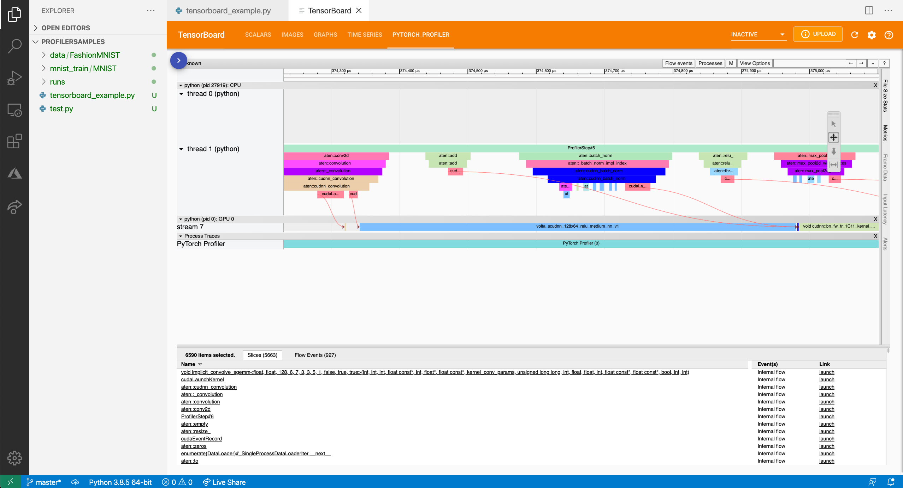

PyTorch support in Visual Studio Code
Along with support for Jupyter Notebooks, Visual Studio Code offers many features of particular interest for PyTorch developers. This article covers some of those features and illustrates how they can help you in your projects. If you're unfamiliar with PyTorch development, Microsoft Learn offers a Get started with PyTorch learning path that covers the fundamentals of deep learning with PyTorch.
Data Viewer support for Tensors and data slices
VS Code provides a Data Viewer that allows you to explore the variables within your code and notebooks, including PyTorch and TensorFlow Tensor data types. Along with that the Data Viewer has support for slicing data, allowing you to view any 2D slice of your higher dimensional data.
To access the Data Viewer, you can either open it from the Notebook Variable Explorer by clicking the Data Viewer icon that shows up beside any Tensor variable. You'll also notice that the Variable Explorer shows the shape/dimensions of the Tensor as well.

Or you can open it from a Python debugging session by right-clicking any Tensor variable in the debugger and selecting View Value in Data Viewer.

If you have 3-dimensional or greater data (numpy ndarray, PyTorch Tensor, or TensorFlow EagerTensor types) a data slicing panel will open in the Data Viewer by default. Using the panel, you can either use the input box to programmatically specify your slice using Python slice syntax or you can use the interactive Axis and Index dropdowns to slice as well.

Along with slicing, you can search for values of interest such as "inf's" or "NaN's" by searching for those keywords in the filter under each column name.
TensorBoard integration
TensorBoard is a data science companion dashboard that helps PyTorch and TensorFlow developers visualize datasets and model training. With TensorBoard directly integrated in VS Code, you can spot check your models predictions, view the architecture of your model, analyze your model's loss and accuracy over time, and profile your code to find out where it's the slowest.

To start a TensorBoard session, open the Command Palette (kb(workbench.action.showCommands)) and search for the command Python: Launch TensorBoard. Afterwards, you will be prompted to select the folder where your TensorBoard log files are located. By default, VS Code uses your current working directory and automatically detects your TensorBoard log files within any subdirectories, but you can also specify your own directory. VS Code will then open a new tab with TensorBoard and manage its lifecycle as you work.
You can also use the setting python.tensorboard.logDirectory to set a default TensorBoard log directory for your folder/workspace.
PyTorch Profiler integration
Along with TensorBoard, VS Code and the Python extension also integrate the PyTorch Profiler, allowing you to better analyze your PyTorch models in one place. For more information about the profiler, see the PyTorch Profiler documentation.

IntelliSense through the Pylance language server
The Python editing experience in VS Code, enhanced with the power of Pylance, provides completions and other rich features for PyTorch. For the best experience, update PyTorch to 1.8.1 to get improved completions for submodules, such as nn, cuda, and optim.